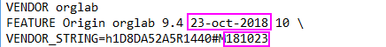

FAQ-905 新しいバージョンのアップデートを受ける資格があるでしょうか？
Eligible-for-Origin-upgrade
最終更新日：2023/1/30
 | 新しいバージョンのリリースがある場合、ヘルプ: ヘルプファイルを取得/アップデートのチェックを選択したときに通知されます。
|
シングルユーザ/マルチユーザのライセンスファイル版Originユーザ
- バージョンにかかわらず永久ライセンスのOriginを購入した場合、メンテナンス期限が新しいバージョンのリリース日以降であるか確認してください。その場合、同じPCに無料で新しいバージョンをインストールできます。
- 期限付きライセンスのOriginを購入した場合、Originの期限を確認してください。期限が切れていなければ（ヘルプ: バージョン情報で確認できます）、同じPCに新バージョンをインストールして継続利用できます。
Note: ヘルプ: バージョン情報で、現在のOriginのライセンスおよびメンテナンス情報を確認できます。ヘルプ: バージョン情報のメンテナンス期限の情報が誤っている場合、おそらく、メンテナンス契約を更新した後にライセンスのアクティベート操作を行っていないのが原因です。
| このページを参照して新しいバージョンに自動アップグレードする方法を確認してください。
|
ネットワーク同時起動版Originユーザ
- バージョンにかかわらず永久ライセンスのOriginを購入した場合、メンテナンス期限が新しいバージョンのリリース日以降であるか確認してください。その場合、同じPCに無料で新しいバージョンをインストールできます。
- 期限付きライセンスのOriginを購入した場合、Originの期限を確認してください。期限が切れていなければ（ヘルプ: バージョン情報で確認できます）、同じPCに新バージョンをインストールして継続利用できます。
Note: ヘルプ: バージョン情報で、現在のOriginのライセンスおよびメンテナンス情報を確認できます。ヘルプ: バージョン情報のメンテナンス期限の情報が誤っていると思う場合、おそらく、メンテナンス契約を更新した後にライセンス管理者がFLEXnet Serverのライセンスを新しいものに差し替えていないのが原因です。
ネットワーク同時起動版管理者: メンテナンス契約期限を確認する方法
ライセンスファイルの保存場所を参照し、テキストエディタで開きます。
- 永久ライセンス: FEATURE行にあるOriginのバージョン番号は最新の利用可能バージョンでない可能性があります。VENDOR_STRINGの後に記載されているメンテナンス期限が重要です(例えば、VENDOR_STRING=h0316F62A5R7200#MYYMMDDでは、YY=二桁の年、MM=月、DD=日)。

- 期限付きライセンス: FEATURE行にあるOriginライセンスの期限がVENDOR_STRINGの後に記載されている日付に対応しています(例えば、VENDOR_STRING=h1D8DA52A5R1440#MyyMMddの場合YY=二桁の年、MM=月、DD=日)。
- 
例: Originを2017年の5月に勝った場合、1年間のメンテナンス契約がつきます。Origin 2018は2017年11月9日にリリースされました。この場合、メンテナンス期限は2018年5月なので、2018にアップグレードできます。
学生版Originユーザ
ライセンスの期限内であれば、同じPCに新しいバージョンをインストールして継続利用できます。
キーワード:アップグレード, アップデート, 資格, クロスバージョン, ライセンス, 更新, メンテナンス